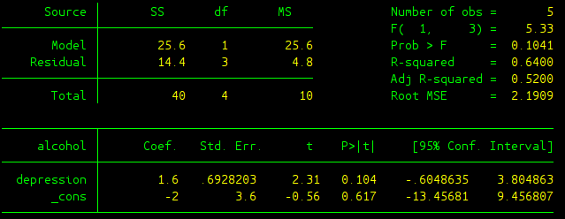
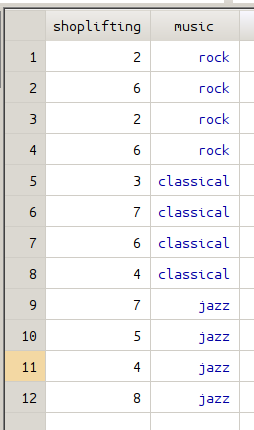
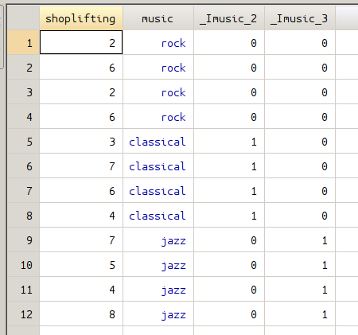
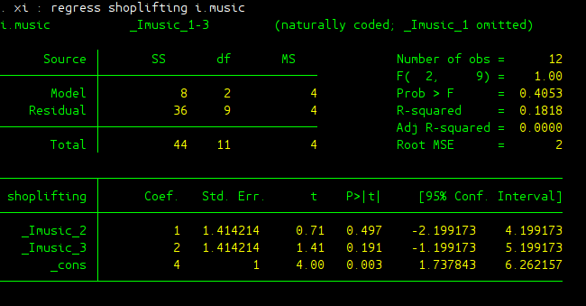
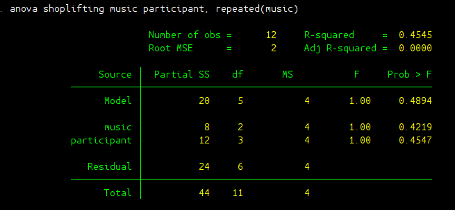
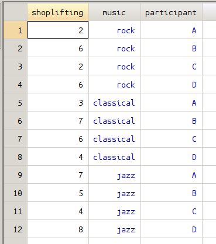
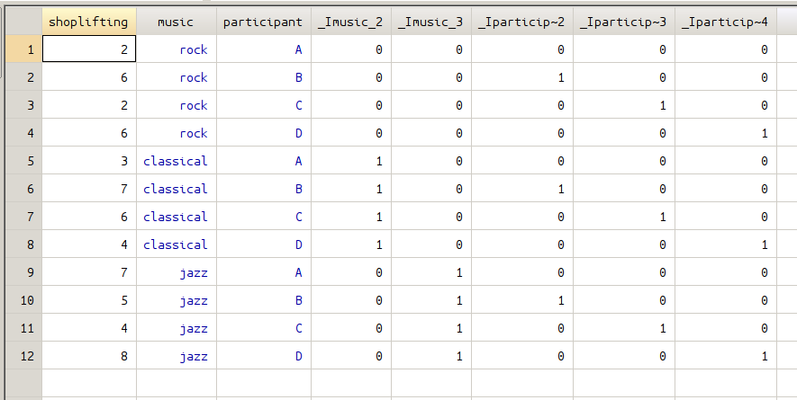
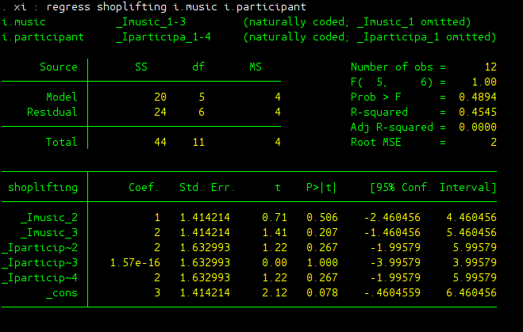

Section 4: Linear Regression¶
This section will walk you through using STATA to conduct linear regression analysis. Simple linear regression, multi-variate linear regression, and the equivalence between ANOVA and linear regression will be covered.
Section 4.1: Simple Linear Regression¶
Depression Vs Alcohol Consumption¶
This is the practice problem we went through in the class, it talks about the relationship between depression scores and alcohol consumption. Load the data we are going to use.
use depression_alcohol.dta
If you use edit command to inspect your data, you will find out that there are two variables: depression score, and alcohol consumption. Since we plan to use depression score to predict alcohol consumption, we set depression score to be variable \(x\) (predictor), and set alcohol score to be variable \(y\) (criterion). To get a better picture of the data we have, we can generate scatter plot of these two variables and plot the best fitting line.
graph twoway (scatter alcohol depression) (lfit depression alcohol)
{kind=link}
In the above command, two graphs can be generated. Parentheses () are used to separate two graphs and to make sure these two plots appear in the same figure. In the second plot, lfit is used to generate linear fitting line. Now to conduct simple linear regression, use can use regress command to do the work. The generic form is
regress y x
For the example here, it would be
regress alcohol depression
The output can be found in the picture below:
{kind=link}
The output needs to be further explained:
- Source Table: This gives results regarding whether the linear model as a whole is significant or not, or in other words whether all the coefficients in the linear regression model are zero. SS Total gives the total variability in variable \(y\), the dependent variable (DV); SS Model gives the variability of the DV that can be explained by all the independent variables (IVs) using this linear regression model; SS Residual represents the variability of DV that cannot be explained by the model. These different sources of SS are not different from what we’ve seen in ANOVA test. Where SS Model and SS Residual are just equivalent to SS Between and SS Within in ANOVA test. In this source table df (degree of freedom) and MS (same as \(S^2\) in ANOVA test) are also given. Note that \(df_{Total} = N-1\), \(df_{Model} = k\), and \(df_{Residual} = N-k-1\) where \(N\) is the number of observation in the data, \(k\) is the number of independent variables. In the simple linear regression case, \(k=1\) since we only have one independent variable.
- F(1, 3): It gives the F-score regarding whether the linear regression model as whole is significant or not.
- Prob > F: The p-value about the significance of the linear regression model. Apparently in this case, the model is not significant since p is bigger than 5%.
- R-square: Same as the effect size \(R^2\) in ANOVA test, here it means the proportion of the variability in DV that can be explained by the variability in all the independent variables (IVs).
- Adj R-squared: Adjusted \(R^2\) which takes into the adjustment of number of IVs, since \(R^2\) would in general increase as the number of IVs increases.
- Root MSE: It is the standard deviation of the error term, and is the square root of the \(MS_{Residual}\).
- alcohol: This column shows all the DVs and IVs. The variable on the top alcohol is the dependent variable, and the variables down below are all the independent variables. _cons represents the constant (or the y-intercept).
- Coef: This column gives regression coefficients.
- Std. Err.: These are the standard errors associated with the coefficients. Same as the t tests we’ve learned, standard error is used to compute the t test statistic.
- t: The values in this column are derived from taking the ratio of Coef. and Std. Err., same as what we did in our t tests. These are the t test statistic regarding whether Coef is significantly different from zero or not.
- P>|t|: This gives the p-value for testing the significance of each Coef. Take 0.104 for example, it means the coefficient in front of variable depression is not significantly different from zero.
- [95% Conf. Interval]: This shows the 95% confidence interval for the coefficient.
Section 4.2: Multi-variate Linear Regression and ANOVA¶
Multi-variate linear regression is powerful, this section demonstrates that the analysis done by ANOVA can also be done by using multi-variate linear regression analysis. I will use the example in lecture 36, which talks about how background music type affects the rate of shoplifting.
Linear Regression and One-Way Between ANOVA¶
The first example is regarding One-Way Between ANOVA and linear regression, since we assume that all 12 stores in the data set are distinct. You can use the following command to inspect the data we are talking about here.
use between_regression.dta
edit
There are 12 data points, each represents the number of shoplifting from one of 12 distinct stores. One-Way Between ANOVA test can be used to determine whether music type affect the number of shoplifting.
anova shoplifting music
{kind=link}
From the above output, we can see that the F-score in ANOVA test is 1 and the associated p-value is 0.4053. The same analysis can be done by using linear regression analysis with the help of dummy variable. In this example, we need to define two dummy variables regarding background music type. Fortunately, there’s no need for us to construct the dummy variables directly. xi command can automatically create the dummy variables needed.
xi : regress shoplifting i.music
By using the xi together with regress, dummy variables can be directly created without additional work. In the figure below, the data on the left is the original data before using xi, the data on the right shows the data after two dummy variables have been created.
 {kind=link}
{kind=link}
The output of regression analysis can be found in the following picture.
{kind=link}
After the regression is done, we can test whether the population coefficient in front of these two dummy variables are both zero or not. The command is given as:
test _Imusic_2 _Imusic_3
{kind=link}
As can be seen clearly from the result, we end up with the same F-score and the same p-value. The conclusion would be the same as you would get in ANOVA test: we fail to reject the null and the effect of music type on shoplifting was not significant.
Linear Regression and Two-Way Within ANOVA¶
This is a slightly different version from the example we just talked about. In this case, a group of 4 different stores are tested repeatedly. So in order to determine whether background music affects shoplifting, we need to use One-Way Within-Subject ANOVA test.
clear all
edit
anova shoplifting music participant, repeated(music)
The result can be found in the following picture. The F-score we are interested in to determine the effect of music on shoplifting is 1 with a p value of 0.4219.
{kind=link}
In the data set, variable participant represents different stores. Here we have four different stores denoting as A, B, C, and D. To use linear regression analysis, we need to create another set of dummy variables regarding different stores. The xi command can do the work for us.
xi : regress shoplifting i.music i.participant
The xi generates two sets of dummy variables regarding variable music and participant, the following figures give all the dummy variables created.
 {kind=link}
{kind=link}
The linear regression result is also given here:
{kind=link}
Again under linear regression framework, to determine whether music type affect shoplifting significantly, one need to test whether the coefficients in front of the dummy variables for music type are both zero or not:
test _Imusic_2 _Imusic_3
{kind=link}
As well expected, the F score, as well as p-value, is the same as we have in ANOVA analysis. F test score is 1 with a p-value of 0.4219.
Do-files and Data files¶
The do file and data files used in this section can be found here.